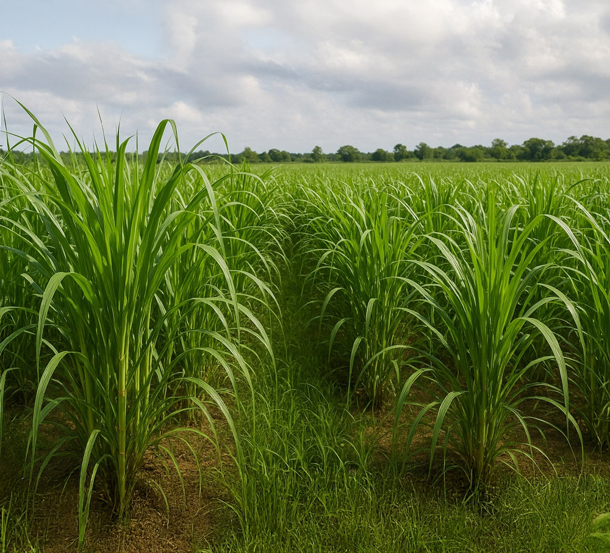

Fueling the Future with
Sustainable Energy
Transforming Napier grass and pressmud into high-quality Compressed Biogas (CBG). We are driving India's transition to circular, renewable, and clean energy ecosystems through sustainable agricultural integration.

100%
Commitment to
Green Energy
About Us
Pioneering Circular Economy in Karnataka
At Rudraksh Green Refineries, we believe in the power of transforming agricultural resources into wealth. Our state-of-the-art facility is dedicated to producing Compressed Biogas (CBG) using specific, high-yield feedstocks like Napier grass and sugar industry pressmud, offering a robust, sustainable alternative to fossil fuels.
We are proud to align our mission with the Government of India's GOBARdhan Scheme. By effectively co-digesting Napier grass and pressmud, we generate clean energy, empower local farming communities, and create a greener footprint for the nation through advanced agricultural integration.
Aligned with National Sustainability Goals
Project Overview
A World-Class CBG Facility
Currently under development, our flagship project represents a significant investment in regional renewable energy infrastructure.
5 TPD
CBG Production Capacity
Producing 5 Tonnes Per Day of Pure Compressed Natural Gas with more than 98% purity
115 TPD
Feedstock Capacity
Processing 115 Tonnes Per Day of Napier grass and pressmud to produce high-yield, pure Compressed Biogas efficiently while supporting local agriculture.
6 Acres
Secured Land Facility
A sprawling, meticulously planned 6-acre leased site dedicated to anaerobic digestion, purification, and storage infrastructure.
Dharwad
Karnataka
Strategically located in Dharwad, enabling excellent access to regional Napier grass cultivators, local sugar mills for pressmud supply, and energy off-take grids.